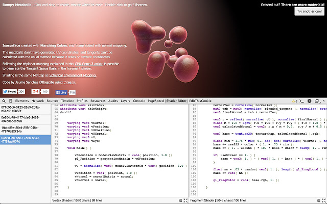
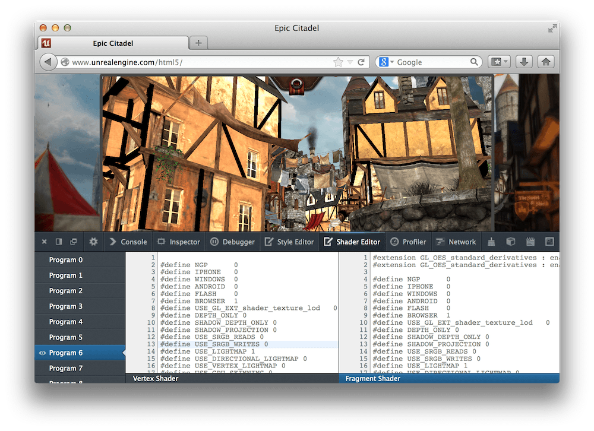

Tools

three inspector chrome extension
Three's own webeditor
Vectary paid webeditor
Node based Material editor
Material tool
Unity shadergraph

Live editing shaders (Firefox)(Built-in)
opensource 3d modelling in your browser (holes and everything)
Good to know
Voronoi (fracturing)
Perlin noise
Morphtargers & dictionary blender
Gimbal, euler, gimlock problem (multiple rotations)
Lettice
Bit more advanced...
Mean values
Libraries & starters
List of physics libraries (2D & 3D)
Dom rendering
Typescript starter
Cool opensource experiments
Path flow (and bend)
MusicVizz (little three.js music visualisations)
Webgl wonderland
tests
animating alpha map
Sticky image
3D model sources
Poly
Free3D
Performance
3D data compression (draco)
GLTF complete list (viewer, optimise, tools)
Online gltf (glb) viewer and
The exporter for blender 2.8+
work with workers for perfomance (especially with physics)
Tutorials & help
CJ gammon
David Scott Lyons slides
three forum
Reading
Rise of shaders
Case study Orano
Inspiratie
Awwwards collection